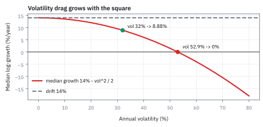
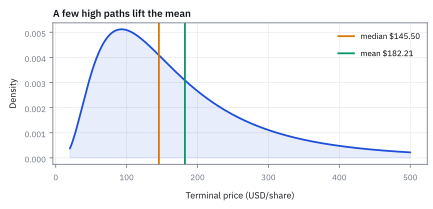

10.2 Expected Future Price — Why the Drift Is Exactly μ
ทำไมค่าเฉลี่ยของ Geometric Brownian Motion (GBM) ในอนาคตจึงเลื่อนไปตามอัตรา μ
กองทุนโฆษณาว่ามูลค่าโตเฉลี่ย 14% ต่อปี ความผันผวน 32% ลงทุน \$100 นาน 20 ปี นักลงทุนคนกลาง ๆ ได้เท่าไร กี่เปอร์เซ็นต์ได้ถึงค่าเฉลี่ย และควรกู้มาลงกี่เท่า?
เฉลย: อัตราทบต้นจริงคือ 14% − 0.32²/2 = 8.88% ต่อปี 20 ปี median คือ \$591 ขณะที่ค่าเฉลี่ยคือ \$1,644 ห่างกัน 2.78 เท่า มีแค่ 23.7% ที่ได้ถึงค่าเฉลี่ย และ 10.7% ยังขาดทุน กู้ดีที่สุด 1.37 เท่า เกิน 2.73 เท่าขาดทุนแน่ในระยะยาว
ศัพท์ที่ใช้ในหัวข้อนี้
- expected value
- ค่าเฉลี่ยถ่วงน้ำหนักของ outcomes ทุกแบบภายใต้ distribution ที่กำหนด ใช้สรุป mean P&L หรือ mean future price แต่ไม่ใช่ outcome ที่ต้องเกิดขึ้น
- median
- median ที่มีโอกาสครึ่งหนึ่งอยู่ต่ำกว่าและครึ่งหนึ่งอยู่สูงกว่า ใช้บอก typical path เมื่อ distribution เอียงและค่าเฉลี่ยถูกดึงด้วย right tail
- moment generating function
- สูตรที่ให้ expectation ของ exponential ของ normal random variable ใช้คำนวณค่าเฉลี่ยของ GBM โดยไม่ต้องสุ่ม paths จำนวนมาก
- volatility drag
- ส่วนต่างระหว่าง arithmetic price growth กับ typical log-growth ที่เกิดจากความผันผวน ใช้เตือนว่าผลตอบแทนขึ้นลงแรงทำให้ compounded wealth โตช้าลง
- lognormal distribution
- distribution ของ positive random variable ที่ logarithm เป็น normal ใช้บรรยาย terminal price ที่มี right tail ของ GBM
- variance
- ค่าเฉลี่ยของ squared deviation จากค่าเฉลี่ยใช้วัดการกระจายและกำหนด how uncertainty accumulates with time
- random variable
- quantity ที่ค่าขึ้นกับ outcome สุ่ม ใช้แยก future price หรือผลตอบแทนออกจาก input ที่รู้แน่นอนวันนี้
- compounding
- การนำผลตอบแทนของแต่ละช่วงมาคูณต่อกันเป็น wealth growth ใช้เชื่อม one-period return กับผลสะสมหลายปี
- leverage
- การขยาย exposure ให้มากกว่า cash capital ใช้เพิ่มทั้ง expected return และ volatility drag จึงต้องมี limit
- factor
- quantity มาตรฐานที่คูณกับค่าเริ่มต้นเพื่อให้ค่าใหม่ ใช้อธิบาย price multiplier และ growth decomposition
- leveraged Exchange-Traded Fund (ETF)
-
คืออะไร: กองทุนที่ตั้งเป้าให้ผลตอบแทน *รายวัน* เป็นสองหรือสามเท่าของดัชนีที่อ้างอิง
ใช้ทำอะไร: ใช้เก็งกำไรระยะสั้นเมื่อมั่นใจทิศทางมาก
ทำไมต้องระวัง: เพราะมันปรับสถานะใหม่ทุกวันเพื่อรักษาอัตราส่วน ผลคือแรงฉุดความผันผวนโตตามกำลังสองของ leverage ไม่ใช่โตเป็นเส้นตรง
- leverage multiplier
-
คืออะไร: ตัวเลข $L$ ที่บอกว่าเราคุม exposure มากกว่าเงินทุนจริงกี่เท่า
ใช้ทำอะไร: แปลงการขยับของดัชนีให้เป็นการขยับของพอร์ตเรา
ทำไมต้องระวัง: เพราะมันขยายความผันผวนเป็น $L$ เท่าแบบเส้นตรง แต่แรงฉุดที่กัดกินผลตอบแทนขยายเป็น $L^2$ เท่า สองอัตรานี้ไม่เท่ากัน
- standard deviation (SD)
- ความกว้างของการกระจายในหน่วยเดียวกับข้อมูล ใช้วัดว่าเป้าหมายอยู่ห่างจุดกลางกี่ช่วง
- swap
- สัญญาแลกกระแสเงินสดระหว่างสองฝ่าย ใช้ให้กองทุนได้ผลตอบแทนเป็นหลายเท่าของดัชนีโดยไม่ต้องถือหุ้นจริงทั้งหมด
- funding rate
- ดอกเบี้ยที่จ่ายบนเงินที่ยืมมาซื้อเพิ่ม ใช้คิดต้นทุนของส่วนที่เกินเงินทุนตัวเอง
- ProShares Ultra Oil & Gas (DIG)
- ETF ที่ให้ผลตอบแทนรายวันสองเท่าของดัชนีหุ้นน้ำมันและก๊าซสหรัฐ ใช้เก็งกำไรขาขึ้นระยะสั้นของหุ้นพลังงาน
- ProShares UltraShort Oil & Gas (DUG)
- ETF คู่ของ DIG ที่ให้ผลตอบแทนรายวันลบสองเท่าของดัชนีเดียวกัน ใช้เก็งกำไรหรือป้องกันขาลงระยะสั้น
- expense ratio
- ค่าธรรมเนียมรายปีที่กองทุนหักจากมูลค่ากอง เป็นเปอร์เซ็นต์ต่อปี ใช้เทียบต้นทุนการถือกองทุนแต่ละกอง
สัญลักษณ์ที่ใช้ในหัวข้อนี้
| สัญลักษณ์ | ความหมาย | หน่วย |
|---|---|---|
| $s$ | future horizon จากเวลาปัจจุบัน | year |
| $Y$ | Brownian increment $W_{t+s}-W_t$ | $\sqrt{\mathrm{year}}$ |
| $m$ | mean ของ log price ratio | ไม่มีหน่วย |
| $\Phi$ | พื้นที่สะสมใต้เส้นระฆังมาตรฐาน ใช้แปลงค่ามาตรฐานให้กลายเป็นความน่าจะเป็น ชื่อเต็มคือ standard normal cumulative distribution function | probability |
| $\mathbb E_t[\cdot]$ | expectation เมื่อรู้ข้อมูล ณ เวลา $t$ | ตาม quantity ด้านใน |
| $L$ | leverage multiplier ของกองทุน ETF | เท่า |
| $g$ | อัตราทบต้นที่เส้นทางกลาง ๆ ได้จริง $\mu-\sigma^2/2$ | ต่อปี |
| $k$ | จำนวนเท่าที่กู้มาลงทุน | เท่า |
| $\lambda$ | ตัวคูณผลตอบแทนรายวันของ leveraged ETF เช่น 2 หรือ −1 | เท่า |
ที่มาที่ไป: ตัวเลขเดียวกันที่คนเรียกคนละอย่าง
คำว่า growth ต้องระบุว่าหมายถึงค่าใด ใน GBM นี้ค่าเฉลี่ยของราคาโตด้วยอัตรา μ ส่วนค่าเฉลี่ยของ log return ต่อหน่วยเวลาเท่ากับ μ ลบครึ่งหนึ่งของ σ² สองค่านี้ต่างกันเพราะเราเฉลี่ยคนละปริมาณ
ครึ่ง variance เป็นผลเฉพาะของโครงสร้าง Normal ในแบบจำลองนี้ หัวข้อ 1.10 แสดงตัวอย่างเหรียญที่ต้องชดเชยต่างออกไปแล้ว ส่วนหน้านี้พิสูจน์แบบมีเงื่อนไข โดยนับเฉพาะข้อมูลที่รู้ถึงวันนี้
ที่มาทางประวัติศาสตร์: ทำไม Samuelson ต้องใส่ลบครึ่ง variance ไว้ในเลขชี้กำลัง
ในปี 1900 Louis Bachelier เสนอให้ใช้ Brownian motion จำลองราคาหุ้นบนตลาด Paris Bourse เป็นครั้งแรก แต่แบบจำลองของเขาเป็น arithmetic: ระดับราคาเป็น random walk แบบเส้นตรง ข้อผิดพลาดร้ายแรงคือราคาหุ้นมีโอกาสติดลบ ทั้งที่ในโลกความเป็นจริง ผู้ถือหุ้นมีความรับผิดจำกัด (limited liability) ราคาจึงไม่มีทางต่ำกว่าศูนย์ได้เลย
ราว ๆ ปี 1965 Paul Samuelson แก้ปัญหานี้โดยเสนอ Geometric Brownian Motion (GBM) นำ Brownian motion ไปใส่ไว้บนเลขชี้กำลังของระดับราคา ทำให้ราคาเป็นบวกเสมอ แต่ความยากใหม่ก็ตามมาทันที: exponential เป็น function ที่โค้งขึ้น ตามหลัก Jensen's inequality ค่าเฉลี่ยของ exponential ย่อมสูงกว่า exponential ของค่าเฉลี่ยเสมอ
ถ้า Samuelson ตั้งให้อัตราบนเลขชี้กำลังเป็น drift ดิบ ๆ ระดับราคาเฉลี่ยจะโตเตลิดไปไกลกว่าที่ควรจะเป็น เพื่อบังคับให้ expected future price เติบโตที่อัตรา drift $\mu$ พอดี เขาจึงต้องจงใจลบครึ่งหนึ่งของ variance ออกจากเลขชี้กำลัง พจน์นี้จึงไม่ใช่ต้นทุนหรือแรงเสียดทานของตลาด แต่เป็นตัวชดเชย convexity ที่มนุษย์จงใจออกแบบไว้
คำถามหนึ่งข้อ แต่มีสาม growth rates
ภายใต้ GBM ต้องพูดให้ชัดว่าถาม expected price, median price หรือ expected log return ทั้งสามใช้ inputs เดียวกันแต่ตอบคนละคำถาม: budgeting อาจต้องการ mean, investor experience มักใกล้ median, และ compounding research สนใจ log-growth
ขั้นที่ 1 — ของที่ยกมาจากหัวข้อ 10.1: สูตรเดินหน้าหนึ่งก้าว
บรรทัดนี้เป็น ของที่ให้มา จากหัวข้อ 10.1 ไม่ได้สร้างใหม่ที่นี่ เมื่อตรึงข้อมูลถึงเวลา $t$ แล้ว ราคาปัจจุบันกลายเป็นเลขที่รู้ค่า เหลือแค่ก้อนสุ่มก้อนเดียวคืออนาคตที่ยังไม่เกิด ทุกบรรทัดที่เหลือในหัวข้อนี้คำนวณออกมาจากบรรทัดเดียวนี้ ไม่มีสูตรอื่นเข้ามาอีก
เมื่อข้อมูลถึงเวลา $t$ ถูกตรึง $S_t$ เป็น known factor และอนาคตเหลือ Brownian increment $Y$ ซึ่งมี variance เท่ากับ horizon $s$
ขั้นที่ 2 — ดึง known factor ออกจาก expectation
ราคาวันนี้กับส่วน drift รู้ค่าแล้วทั้งคู่ จึงดึงออกมานอกวงเล็บได้ เหลือของที่ยังสุ่มอยู่ก้อนเดียวให้จัดการ
บรรทัดแรกแทนราคาจากสูตร transition บรรทัดสองแยกเลขชี้กำลังด้วย $e^{a+b}=e^{a}e^{b}$ บรรทัดสามดึงสิ่งที่รู้แล้ว ณ เวลา $t$ ออกจาก conditional expectation ส่วนบรรทัดสุดท้ายใช้ข้อสำคัญว่า Brownian increment $Y=W_{t+s}-W_t$ เป็นอิสระจากข้อมูลถึงเวลา $t$ จึงเอาเงื่อนไขออกจากก้อนสุดท้ายได้
ขั้นที่ 3 — normal exponential moment
ก้อนที่เหลือคือ exponential ของระฆังคว่ำ ซึ่งคำนวณไว้แล้วในหัวข้อ 1.10 ห้าบรรทัดนี้แค่แปลงตัวแปรให้ตรงกับรูปที่พิสูจน์ไว้ ผลลัพธ์ไม่ใช่หนึ่ง และตรงนั้นคือเหตุผลที่ค่าเฉลี่ยของราคาสูงกว่าค่าที่อยู่ตรงกลาง
เป้าหมายคือค่าเฉลี่ยของ exponential ของระฆัง ซึ่งเราเคยทำมาแล้วครั้งหนึ่งในหัวข้อ 1.10 แต่ทำกับระฆังมาตรฐาน วิธีที่ง่ายที่สุดจึงไม่ใช่การอินทิเกรตใหม่ แต่คือการดัดให้กลายเป็นก้อนมาตรฐานเสียก่อน
คูณก้อนมาตรฐานด้วยรากของ $s$ แล้ว variance จะโตเป็นกำลังสองของตัวคูณ คือได้ $s$ พอดี แทนลงไปก็เหลือก้อนมาตรฐานตัวเดียว ใส่ผลของหัวข้อ 1.10 ที่พิสูจน์ด้วย integral และการจัดกำลังสองสมบูรณ์ แล้วยกกำลังสอง รากก็หายไปพอดี
ผลลัพธ์บรรทัดสุดท้ายคือของที่ต้องหยุดดู มันไม่เท่ากับหนึ่ง ทั้งที่ตัวข้างในมีค่าเฉลี่ยเป็นศูนย์ เพราะ exponential โค้งขึ้น ขาขึ้นจึงชนะขาลงเสมอ ส่วนเกินก้อนนั้นคือหัวใจของทั้งหัวข้อนี้
ขั้นที่ 4 — เจาะลึกที่มาของ exponential moment ด้วยการจัดกำลังสองสมบูรณ์
การพิสูจน์หกบรรทัดนี้ลากบันไดลงมาจนถึงนิยามพื้นฐานที่สุด โดยไม่ต้องท่องจำสูตรลอย ๆ สังเกตว่าหัวใจอยู่ที่การจัดรูปกำลังสองสมบูรณ์เพื่อดึงค่าคงที่ $e^{a^2/2}$ ออกมาข้างนอก
เมื่อนำไปใช้กับ $a=\sigma\sqrt{s}$ จะได้ $a^2/2 = \sigma^2s/2$ ทันที ซึ่งเป็นปริมาณบวกเสมอ ยืนยันว่าความผันผวนใน exponential จะดึงค่าเฉลี่ยของราคาให้สูงขึ้นเสมอ
ลองแทนตัวเลขจริงจากตัวอย่าง 5 ปี: เมื่อความผันผวน $\sigma=0.30$ และระยะเวลา 5 ปี จะได้ตัวคูณก้อน exponential มีค่าประมาณ 1.2523 เมื่อนำไปคูณกับ median price ที่ \$145.50 จะได้ expected price ออกมาเป็น \$182.21 พอดีเป๊ะ
ถ้าจำสูตรไม่ได้ ไม่จำเป็นต้องเปิดตำรา เพราะสร้างใหม่ได้ภายในหนึ่งนาที นิยาม expected value ของ continuous random variable คือเอา function เป้าหมายคูณกับ standard normal density แล้วคำนวณ integral ตลอดช่วง
รวมเลขชี้กำลังเข้าด้วยกัน ตัวเศษข้างในคือ $z^2-2az$ จัดรูปด้วยกำลังสองสมบูรณ์ระดับมัธยมเป็น $(z-a)^2-a^2$ แยกพจน์บวก $a^2/2$ ซึ่งไม่มี $z$ ออกมานอก integral ได้ทันที
ก้อน integral ที่เหลืออยู่ คือพื้นที่ใต้กราฟระฆังคว่ำที่มีจุดกึ่งกลางเลื่อนไปที่ $a$ พื้นที่รวมของ probability density function ใด ๆ ต้องเป็นหนึ่งเสมอ ผลลัพธ์จึงเหลือเพียง $e^{a^2/2}$ ตรงไปตรงมา
ขั้นที่ 5 — cancellation ที่กำหนด convention ของ μ
เอาสองก้อนมาคูณกัน แล้วดูว่าอะไรหักล้างกันพอดี นี่คือเหตุผลที่สูตร GBM ต้องมีพจน์ลบครึ่ง variance ตั้งแต่แรก
พจน์ความผันผวนสองก้อนหักล้างพอดี จึงนิยาม $\mu$ ให้เป็น continuously compounded expected price growth ไม่ใช่ median growth
แล้วเอาไปใช้ทำอะไรได้จริงบ้าง
สูตรนี้ใช้ตรวจค่าเฉลี่ยของราคาที่จำลองตาม GBM ได้ เมื่อจำลองมากขึ้น ค่าเฉลี่ยตัวอย่างควรเข้าใกล้ค่าทฤษฎีภายในความคลาดเคลื่อนจากการสุ่ม
มันยังแยกค่าเฉลี่ยออกจาก median ได้ ราคากึ่งกลางไม่ใช่ผลที่นักลงทุนแต่ละคนจะได้รับ และผลตอบแทนของนักลงทุนจริงยังขึ้นกับราคาเข้าออก เงินปันผล ต้นทุน และขนาดสถานะ
Figure 10.2a — กองทุน 14% ความผันผวน 32%: ค่าเฉลี่ยกับ median แยกกันตามเวลา

เส้นบนคือค่าเฉลี่ยของ \$100 ที่โต 14% ต่อปี เส้นล่างคือ median ที่โต 8.88% ต่อปี ครบ 20 ปีได้ 1,644.46 กับ \$590.62 ห่างกัน 2.78 เท่า ช่องว่างนี้ไม่ใช่เงินหาย นักลงทุนส่วนน้อยที่โชคดีมากดึงค่าเฉลี่ยขึ้น คนกลาง ๆ ได้เส้นล่าง
median ไม่ได้ขัดกับ expectation
exponential ของ Normal มี right tail ยาว: paths ส่วนมากอยู่ใกล้หรือใต้ค่าเฉลี่ยแต่ paths ขาขึ้นสุดโต่งจำนวนน้อยดัน average ขึ้น. จึงห้ามสื่อสาร $S_0e^{\mu s}$ ว่าเป็น “ราคาที่น่าจะได้” โดยไม่บอกว่ามันคือ mean
ขั้นที่ 6 — distribution ของ log return
เปลี่ยนมุมมองจากราคาเป็น log return จะเห็นว่ามันเป็นระฆังธรรมดา ห้าบรรทัดนี้แสดงว่าจุดกลางของ log return ไม่ใช่ค่าเดียวกับค่าเฉลี่ยของราคา และความต่างนั้นมาจากพจน์ลบครึ่ง variance ที่ติดอยู่ในเลขชี้กำลังตั้งแต่ขั้นที่ 1
หารสองข้างของขั้นที่ 1 ด้วยราคาปัจจุบัน แล้วใส่ log ทั้งสองข้าง log ย้อน exponential กลับพอดี เลขชี้กำลังจึงโผล่ออกมาทั้งก้อน เหลือของที่หน้าตาคุ้น คือเลขคงที่บวกระฆังคูณตัวคูณ
จุดกลางมาจากพจน์แรกอย่างเดียว เพราะพจน์ที่สองมีค่าเฉลี่ยศูนย์ ส่วนความกว้างมาจากพจน์ที่สองอย่างเดียว เพราะเลขคงที่ไม่เหวี่ยง ตัวคูณออกมาเป็นกำลังสองตามหัวข้อ 6.5 และรูปทรงยังเป็นระฆัง เพราะการคูณและบวกเลขคงที่ไม่ทำให้ระฆังเลิกเป็นระฆัง
สิ่งที่ต้องสังเกตคือจุดกลางมีพจน์ลบครึ่ง variance ติดอยู่ ไม่ใช่ตัวเดียวเปล่า ๆ พจน์นี้จะหายไปในค่าเฉลี่ยของราคา แต่ไม่หายจากค่าเฉลี่ยของ log return และความสับสนระหว่างสองอย่างนี้ทำให้คนอ่านผลผิดบ่อยที่สุด
ขั้นที่ 7 — median และค่าเฉลี่ยจาก inputs เดียวกัน
วางสองค่าไว้ข้างกันเพื่อให้เห็นว่ามันต่างกันจริง ทั้งที่มาจากตัวเลขชุดเดียวกัน เจ็ดบรรทัดนี้แสดงว่าพจน์ลบครึ่ง variance ในสูตรราคา ไม่ได้ใส่มาเพื่อความสวยงาม มันมีหน้าที่หักล้างส่วนเกินของ exponential ให้ค่าเฉลี่ยออกมาเป็น $\mu$ พอดี
คำถามคือ median กับค่าเฉลี่ยของราคาต่างกันตรงไหน เริ่มจาก median ก่อนเพราะง่ายกว่า ระฆังสมมาตรรอบศูนย์ ครึ่งหนึ่งจึงอยู่ต่ำกว่าศูนย์ และ exponential เพิ่มขึ้นเสมอจึงไม่พลิกเครื่องหมายตอนแปลงกลับ ค่าที่แบ่งครึ่งราคาอ่านออกมาได้ทันที
ฝั่งค่าเฉลี่ยต้องใช้ขั้นที่ 3 ดึงก้อนที่ไม่สุ่มออกมาก่อน แล้วแทนผลนั้นลงไป พจน์ลบครึ่ง variance กับพจน์บวกครึ่ง variance หักกันหมดพอดี
นี่คือเหตุผลที่สูตรของขั้นที่ 1 ต้องมีพจน์ลบครึ่งอยู่ตั้งแต่แรก มันไม่ได้โผล่มาลอย ๆ แต่ถูกใส่ไว้ให้หักกับส่วนเกินของขั้นที่ 3 พอดี
หารสองค่าแล้วเหลือส่วนต่างที่โตตามความผันผวนและเวลา ค่าเฉลี่ยจึงสูงกว่าค่าที่อยู่ตรงกลางเสมอ หางขวาที่ยาวไม่จำกัดคือตัวที่ดึงมันขึ้น แปลว่าผลตอบแทนเฉลี่ยที่โฆษณากัน คนส่วนใหญ่ไม่ได้รับ
Figure 10.2b — ยิ่งผันผวน median ยิ่งโตช้า และช้าลงแบบกำลังสอง

เส้นแดงคือ median growth ต่อปี เท่ากับ 14% ลบ $\sigma^2/2$ ที่ความผันผวน 32% เหลือ 8.88% และที่ 52.9% เหลือศูนย์ เพิ่มความผันผวนสองเท่า แรงฉุดเพิ่มสี่เท่า เส้นประคือ 14% ที่ค่าเฉลี่ยยังได้ทุกกรณี ช่องว่างระหว่างสองเส้นคือภาษีความผันผวนในขั้นที่ 9
ขั้นที่ 8 — checked USD example at five years
แทนตัวเลขจริงห้าปี จะเห็นระยะห่างของสองค่านี้ชัดจนเถียงไม่ได้
expected price ใช้ 12% ต่อปี ส่วน median exponent ใช้ $0.12-0.045=0.075$ ต่อปี; ทั้งสองเป็น hypothetical USD per share และไม่ใช่ forecast guarantee
Figure 10.2c — ราคาหลัง 5 ปีจากขั้นที่ 8

หุ้น \$100 drift 12% ความผันผวน 30% ครบ 5 ปี เส้นส้มคือ median \$145.50 เส้นเขียวคือค่าเฉลี่ย \$182.21 ตามขั้นที่ 8 หางขวายาวเกิน \$400 ดึงค่าเฉลี่ยให้อยู่ขวาของยอด เวลารายงานตัวเลขความเสี่ยงต้องบอกว่าตัวไหนคือค่าเฉลี่ย ตัวไหนคือ median
เชื่อมกับ implementation และ controls
ใน simulation ใช้ exact transition ของ 7.1 แล้วตรวจ sample mean กับ analytical target $S_0e^{\mu s}$ ตามจำนวน paths ที่มากพอ สร้าง separate columns สำหรับ mean, median, percentile และ expected shortfall; อย่าให้ dashboard ที่ชื่อ “expected” ซ่อน tail risk หรือ horizon convention
Figure 10.2d — จำลองยิ่งมาก ค่าเฉลี่ยตัวอย่างยิ่งเข้าใกล้ 182.21

จำลองราคาหลัง 5 ปีทีละเส้นทาง แล้วหาค่าเฉลี่ยสะสม ช่วงไม่กี่สิบเส้นแรกค่าเฉลี่ยกระโดดไปมา เพราะเส้นทางที่สูงมากเข้ามาทีละตัว พอถึงหลักพันเส้นจะนิ่งใกล้ 182.21 ที่คำนวณด้วยสูตร ค่าเฉลี่ยนิ่งแล้ว แต่ราคารายเส้นยังกระจายกว้างเท่าเดิม จำลองมากขึ้นไม่ได้ลดความเสี่ยงของพอร์ต
โจทย์หลัก: 14% บนโบรชัวร์ กับ 8.88% ที่เข้ากระเป๋าจริง
กองทุนหนึ่งรายงานว่ามูลค่าหน่วยลงทุนโตเฉลี่ย μ = 14% ต่อปี ความผันผวน σ = 32% ต่อปี สมมติราคาเดินตาม GBM ขั้นที่ 5 พิสูจน์แล้วว่า drift ของราคาคือ μ พอดี สี่ขั้นถัดไปตอบว่าคนกลาง ๆ ได้อัตราทบต้นเท่าไร ลงทุน \$100 นาน 20 ปีค่าเฉลี่ยกับ median ห่างกันแค่ไหน กี่คนได้ถึงค่าเฉลี่ย และควรกู้มาลงทุนกี่เท่า
ขั้นที่ 9 — ภาษีความผันผวน: ขึ้นแล้วลงเท่ากัน เงินไม่กลับที่เดิม
ก่อนใช้สูตร ลองขึ้นแล้วลงเปอร์เซ็นต์เท่ากันกับเงินจริง แล้วดูว่าหายไปเท่าไร ส่วนที่หายนี้คือที่มาของ σ²/2
ขึ้น x แล้วลง x ผลตอบแทนเฉลี่ยแบบเลขคณิตเป็นศูนย์ แต่เงินหายไป x² ทุกครั้ง เพราะขาลงทำงานบนฐานที่ใหญ่กว่า ขึ้น 50% ได้ \$50 แต่ลง 50% จากฐาน 150 เสีย \$75 ส่วนที่หายต่องวดจึงราวครึ่งหนึ่งของ variance ต่องวด คือ σ²/2
ภาษีนี้โตตาม σ² ไม่ใช่ σ เพิ่ม σ สองเท่า ภาษีเพิ่มสี่เท่า ที่ σ = 60% ต้องมี drift เกิน 18% ต่อปี แค่ให้ median ไม่ขาดทุน ลด σ ของกองทุนนี้จาก 32% เหลือ 20% ได้อัตราทบต้นเพิ่มฟรี 5.12 − 2.00 = 3.12 จุดต่อปี
สองบรรทัดสุดท้ายคืออัตราที่เข้ากระเป๋าคนกลาง ๆ 8.88% ต่อปี ต่ำกว่าที่โฆษณา 5.12 จุด ไม่มีใครเก็บส่วนนี้ไป ไม่ใช่ค่าธรรมเนียม มันคือผลของเงินที่เดินแบบคูณกัน ถ้าแปลงเป็นผลตอบแทนธรรมดา ค่าเฉลี่ยของราคาโต e^0.14 − 1 = 15.03% ต่อปี ส่วนคนกลาง ๆ ได้ e^0.0888 − 1 = 9.29%
ขั้นที่ 10 — \$100 นาน 20 ปี: ค่าเฉลี่ยกับ median ห่างกันกี่เท่า
ใช้ขั้นที่ 7 กับตัวเลขของกองทุน ค่าเฉลี่ยใช้ μ ส่วน median ใช้ g
ช่องว่างคือ e ยกด้วย (σ²/2)T ซึ่งมีเวลาอยู่ในเลขชี้กำลัง มันจึงโตแบบทวีคูณ ปีแรกห่าง 5.3% สิบปีห่าง 1.67 เท่า ยี่สิบปีห่าง 2.78 เท่า สี่สิบปีห่าง 7.7 เท่า ยิ่งลงทุนยาว คำว่าผลตอบแทนคาดหวังยิ่งไม่ใช่สิ่งที่คุณจะได้
กับดักที่พบบ่อยคือเอา 14% ไปทบต้นตรง ๆ 100 × 1.14²⁰ = \$1,374 ตัวเลขนี้ไม่ตรงกับอะไรเลย ไม่ใช่ค่าเฉลี่ย 1,644 และไม่ใช่ median 591 ถ้าจะวางแผนการเงินจริงให้ใช้ median
ขั้นที่ 11 — มีกี่คนได้ถึงค่าเฉลี่ย และกี่คนยังขาดทุนหลัง 20 ปี
log ของผลตอบแทนสะสมเป็นระฆังตามขั้นที่ 6 จึงแปลงคำถามเรื่องราคาเป็นคำถามเรื่อง z ได้
จะได้ถึงค่าเฉลี่ย \$1,644 ต้องมี log return อย่างน้อย 2.8 ซึ่งอยู่เหนือจุดกลาง 0.7155 SD โอกาสจึงเหลือ 23.7% ถ้าปล่อยนักลงทุน 1,000 คนลงกองนี้พร้อมกัน 20 ปี มีแค่ราว 237 คนได้ถึงตัวเลขบนโบรชัวร์
และมีราว 107 คนที่ผ่านไป 20 ปีแล้วยังขาดทุน ทั้งที่ผลตอบแทนคาดหวังเป็นบวก 14% ต่อปี ค่าเฉลี่ยถูกดึงขึ้นโดยคนส่วนน้อยที่โชคดีมาก และในชีวิตจริงคุณได้หนึ่งเส้นทาง ไม่ใช่ค่าเฉลี่ยของพันเส้นทาง
ขั้นที่ 12 — กู้มาลงทุนกี่เท่าถึงดีที่สุด และทำไมกู้มากแล้วพัง
กู้มาลงทุน k เท่า drift โตเป็น kμ ความผันผวนเป็น kσ แต่ภาษีโตเป็น k²σ²/2 ลองแทนเลข แล้วหาจุดสูงสุด
กำไรโตเป็นเส้นตรงตาม k แต่ภาษีโตตาม k² พาราโบลาคว่ำนี้จึงมียอด หา derivative แล้วตั้งเป็นศูนย์ได้ k* = 1.37 เท่า ให้อัตราทบต้น 9.57% ดีที่สุด
เกิน 2.73 เท่า อัตราทบต้นติดลบ ขาดทุนแน่ในระยะยาว แม้ทุกดีลจะมี expected value เป็นบวก สูตร k* = μ/σ² คือเกณฑ์ Kelly ในเวลาต่อเนื่อง ซึ่งจะกลับมาในหัวข้อ 17.2
คำตอบ — กองทุน 14% ความผันผวน 32% ให้อะไรนักลงทุนจริง
คำถาม: ลงทุน \$100 ในกองทุนที่โตเฉลี่ย 14% ต่อปี ความผันผวน 32% นาน 20 ปี คนกลาง ๆ ได้เท่าไร กี่เปอร์เซ็นต์ได้ถึงค่าเฉลี่ย และควรกู้มาลงกี่เท่า?
ของที่มี: ขั้นที่ 5 ถึง 12
1. drift ของราคาคือ μ พอดี เพราะ −σ²/2 ในนิยามถูกหักล้างด้วย +σ²/2 จาก exponential moment
2 อัตราทบต้นที่ได้จริงคือ 0.14 − 0.0512 = 8.88% ต่อปี ต่ำกว่าที่รายงาน 5.12 จุด
3. 20 ปี ค่าเฉลี่ย \$1,644 median \$591 ห่างกัน 2.78 เท่า มีแค่ 23.7% ที่ได้ถึงค่าเฉลี่ย และ 10.7% ยังขาดทุน
4. leverage ที่ดีที่สุด k* = 0.14/0.1024 = 1.37 เท่า เกิน 2.73 เท่าขาดทุนแน่ในระยะยาว
ตรวจเองใน 10 วินาที: 0.32² = 0.1024 ครึ่งหนึ่ง 0.0512 ลบจาก 0.14 ได้ 0.0888 และ 1,644 ÷ 591 ≈ 2.78
แปลว่าอะไร: เห็นตัวเลขผลตอบแทนเฉลี่ยต่อปีบนเอกสารกองทุน ให้ถามทันทีสองข้อ เฉลี่ยแบบไหน เลขคณิต (μ) หรือทบต้นที่เข้ากระเป๋าจริง (μ − σ²/2) และ σ เท่าไร เพราะถ้าไม่รู้ σ แปลงระหว่างสองตัวไม่ได้ สิ่งที่ใช้ตัดสินใจควรเป็น g เสมอ กองทุนที่ผันผวนน้อยกว่าจึงมักชนะกองทุนที่ผลตอบแทนเฉลี่ยสูงกว่าในระยะยาว
โค้ดตรวจ 8.88%, 1,644 กับ 591, 23.7%, 10.7% และ Kelly 1.37
import numpy as np
from scipy.stats import norm
mu, sigma, T = 0.14, 0.32, 20
g = mu - sigma**2 / 2
assert abs(g - 0.0888) < 1e-12
assert abs(np.exp(mu) - 1 - 0.1503) < 1e-4 and abs(np.exp(g) - 1 - 0.0929) < 1e-4
mean20, med20 = 100 * np.exp(mu * T), 100 * np.exp(g * T)
assert abs(mean20 - 1644.46) < 0.01 and abs(med20 - 590.62) < 0.01
assert abs(mean20 / med20 - 2.7843) < 1e-4
sd = np.sqrt(sigma**2 * T)
assert abs(1 - norm.cdf((np.log(mean20 / 100) - g * T) / sd) - 0.2371) < 1e-4
assert abs(norm.cdf(-g * T / sd) - 0.1073) < 1e-4
assert abs(100 * 1.14**20 - 1374.35) < 0.01 # the number that matches nothing
k = np.linspace(0, 3, 30001)
gk = k * mu - k**2 * sigma**2 / 2
assert abs(k[np.argmax(gk)] - mu / sigma**2) < 1e-3 and abs(mu / sigma**2 - 1.3672) < 1e-4
assert abs(gk.max() - 0.0957) < 1e-4 and abs(2 * mu / sigma**2 - 2.734) < 1e-3
rng = np.random.default_rng(72) # simulate 200,000 investors
S20 = 100 * np.exp(g * T + sd * rng.standard_normal(200_000))
assert abs(np.mean(S20 >= mean20) - 0.237) < 0.005 and abs(np.mean(S20 < 100) - 0.107) < 0.005โค้ดตรวจอัตราทบต้น 8.88% ค่าเฉลี่ยกับ median 20 ปี สัดส่วนคนที่ถึงค่าเฉลี่ยและที่ขาดทุนทั้งด้วยสูตรและด้วยการจำลองนักลงทุน 200,000 คน แล้วหา leverage ที่ดีที่สุดด้วยการไล่ k
ตัวอย่างเสริม — แก้ deck นักลงทุนด้วยตัวเลข 5 ปี
บน 10,000 shares ที่ \$100, expected five-year position value คือ \$1,822,119 และ median value คือ \$1,455,000 ก่อน dividends, tax, transaction costs และ model error. deck ที่เรียก \$1.455 ล้าน ว่า expected value จึงผิด convention; deck ที่เสนอ \$1.822 ล้าน เป็น client outcome ก็ชวนเข้าใจผิด รายงานที่ดีใส่ทั้งสองตัวพร้อม 5th/95th percentiles และบอก physical-model assumptions
คำถาม: ทำไม expected value \$1,822,119 จึงสูงกว่า median \$1,455,000 มาก?
ของที่มี: position เริ่ม 10,000 shares ที่ \$100 และ forecast ห้าปีมี expected value \$1,822,119 กับ median \$1,455,000
1 ลบ \$1,455,000 จาก \$1,822,119 ได้ \$367,119 นี่คือช่องว่างที่ right tail ดึงค่าเฉลี่ยขึ้น.
2 หาร \$367,119 ด้วย \$1,455,000 ได้ประมาณ 25.2% จึงไม่ใช่ความต่างเล็ก ๆ ที่ละเลยได้
เฉลย: ค่าเฉลี่ยสูงกว่า median เพราะ outcome ด้านบนที่ใหญ่แต่ไม่บ่อยยก expected value ขึ้น.
เช็ก 10 วินาที: \$1.822119 ล้าน − \$1.455 ล้าน = \$0.367119 ล้าน.
งานจริง: รายงานทั้ง expected value, median และ percentile ก่อนให้ client หรือ risk owner ตัดสินใจ
กับดัก: อย่าเรียก median ว่า expected value หรือขาย expected value ราวกับเป็น outcome ที่ “น่าจะเกิดที่สุด”.
ตัวอย่างที่แรงฉุดกัดจริง: กองทุน 2x ETF
ตอนนี้เรามีสูตรครบทั้งสองอัตราแล้ว ลองใช้กับสินค้าที่คนซื้อกันจริง คือกองทุนที่สัญญาว่าจะให้ผลตอบแทนรายวันเป็นสองเท่าของดัชนี ในแบบจำลองที่ปรับสถานะต่อเนื่อง (continuous rebalancing) กองทุนแบบนี้ก็เดินตาม GBM เหมือนกัน แค่ drift กับความผันผวนถูกคูณด้วย $L$
คำถามคือ ถ้าดัชนีโตแบบ median ที่ 8% ต่อปี กองทุน 2x จะโตแบบ median ที่ 16% ไหม ลองเดาก่อน
โจทย์ ชุดข้อมูลที่คูณสอง: ตัวเลขบนโต๊ะ
| Symbol | Value | ความหมาย |
|---|---|---|
| $\mu$ | 10% | GBM price-drift rate ต่อปีของ SPY |
| $\sigma$ | 20% | annualized volatility ของ SPY |
| $L$ | 2 | leverage ของ ETF (continuous-rebalancing toy model; ไม่คิด funding, fees หรือ tracking error) |
ขั้นที่ 13 — median growth ของ SPY แบบไม่ใส่ leverage
คำนวณ median log-growth rate ของ SPY ก่อนใส่ leverage
$\mu=10\%$ และ $\sigma=20\%$ ทำให้มีแรงฉุด $\sigma^2/2=2\%$ ดังนั้น median log-growth rate ของ SPY คือ 8% ต่อปี (คิดเป็น median simple return เท่ากับ $e^{0.08}-1\approx 8.33\%$)
ขั้นที่ 14 — เลเวอเรจคูณความผันผวน $\sigma$ เป็นเส้นตรง
กองทุน 2x ETF เพิ่มความผันผวนขึ้นเป็น 2 เท่าตรง ๆ
$L=2$ และ $\sigma=20\%$ ทำให้ความผันผวนใหม่กลายเป็น $\sigma_{\text{lev}}=L\sigma=40\%$ ต่อปี
ขั้นที่ 15 — Median Growth ของ 2x ETF เจอแรงฉุดกำลังสองเล่นงาน
คำนวณ median log-growth rate ของ 2x ETF เมื่อแรงฉุดใหม่กลายเป็น $(40\%)^2 / 2 = 8\%$
$L\mu=20\%$ แต่ถูกแรงฉุดใหม่ $(L\sigma)^2/2=8\%$ หักออกไป ทำให้ median log-growth เหลือเพียง 12% ต่อปี (คิดเป็น median simple return เพียง $e^{0.12}-1\approx 12.75\%$) แทนที่จะเป็นสองเท่าของเดิม (16.66%) ตามที่นักลงทุนทั่วไปเข้าใจผิด
ขั้นที่ 16 — ของจริงรายวัน: ดัชนีกลับที่เดิม แต่ ETF ทั้งขาขึ้นและขาลงขาดทุน
ETF แบบ leverage ปรับสถานะทุกวันให้ได้ผลตอบแทนรายวันเท่ากับ λ เท่าของดัชนี λ = 2 คือกองขาขึ้นสองเท่า λ = −1 คือกองขาลง ลองดัชนีที่ขึ้น 5% แล้วลงกลับที่เดิมในสองวัน
ดัชนีกลับมาที่ 100 แต่กองขาขึ้นสองเท่าและกองขาลงต่างเหลือ 99.52 ขาดทุน 0.48% ทั้งคู่ นี่คือภาษีความผันผวนแบบรายวัน สูตรประมาณให้ −0.476% ใกล้ค่าจริง −0.477%
พจน์ (λ² − λ)/2 เป็นบวกทั้งที่ λ = 2 และ λ = −1 กองทั้งสองจึงขาดทุนเมื่อตลาดแกว่งไปมา เหมือนคนที่ขายความผันผวนไว้ ในตลาดน้ำมันที่ผันผวนแรง กองขาขึ้นและขาลงสองเท่าของหุ้นพลังงานเคยลดลงพร้อมกันทั้งคู่ด้วยกลไกนี้
ทำไมยังมีคนซื้อกองขาลง เพราะมันให้สถานะขาลงที่ขาดทุนได้ไม่เกินเงินที่ลงไป ต่างจากการขาย short ที่ขาดทุนได้ไม่จำกัด กองแบบนี้สร้างจาก swap ที่ปรับทุกวัน จึงเหมาะกับการถือสั้น ไม่ใช่ถือข้ามปี
ขั้นที่ 17 — ถือ leverage เองครั้งเดียว เทียบกับถือ ETF ที่ปรับทุกวัน
มีเงิน \$100 อยากได้ exposure สองเท่าของดัชนีหนึ่งปี ทางแรกยืม \$100 ที่ดอกเบี้ย 5% แล้วซื้อครั้งเดียวไม่แตะอีก ทางที่สองซื้อ ETF สองเท่าที่ค่าธรรมเนียม 0.95% ต่อปี ความผันผวนทั้งปี 20% และปลายปีดัชนีกลับมาที่เดิม ทางไหนเหลือเงินเท่าไร?
ทางแรกเป็นบัญชีธรรมดา ปลายปีถือดัชนีสองหน่วย มูลค่า $\lambda S_T$ = 200 แล้วคืนเงินยืมพร้อมดอกเบี้ย $(\lambda-1)S_0(1+rT)$ = 105 เหลือ 95 เสียแค่ดอกเบี้ย 5% เพราะดัชนีไม่ได้ไปไหน
ทางที่สองมีสามก้อนในเลขชี้กำลัง ก้อนแรก $(1-\lambda)rT$ = −5% คือดอกเบี้ยของส่วนที่ยืมเหมือนทางแรก ก้อนที่สอง $fT$ คือค่าธรรมเนียม 0.95% ก้อนที่สามคือแรงฉุดจากการปรับทุกวันแบบเดียวกับขั้นที่ 16 ผลรวมกำลังสองของ log return รายวันทั้งปีประมาณเท่ากับ variance ทั้งปี 0.04 คูณ $(\lambda^2-\lambda)/2$ = 1 จึงหักอีก 4%
ดัชนีเท่าเดิม ทางแรกเหลือ 95.00 ทางที่สองเหลือราว 90.53 ส่วนต่างเกือบทั้งหมดคือก้อนความผันผวนที่ทางแรกไม่มี นี่คือเหตุที่สไลด์ต้นทางเรียกก้อนนี้ว่าการขายความผันผวนปีไหนดัชนีแกว่งแรง ETF เสียมากขึ้นแม้ปลายทางเท่าเดิม สไลด์ใช้ตัวอักษร β แทน λ ความหมายเหมือนกัน
ของจริงจากสไลด์ต้นทาง: ProShares Ultra Oil & Gas (DIG) คือ ETF หุ้นน้ำมันและก๊าซสองเท่า ProShares UltraShort Oil & Gas (DUG) คือตัวขาลงสองเท่าของดัชนีเดียวกัน สัปดาห์ 2 ถึง 6 มีนาคม 2009 สองกองวิ่งสวนกันตามที่ออกแบบ DUG +9.60% DIG −13.05%
แต่ตลอดกันยายน 2008 ถึงมีนาคม 2009 ที่หุ้นพลังงานร่วงหนักและแกว่งแรง DIG ลบ 74.73% ส่วน DUG ที่ควรได้กำไรจากขาลงกลับลบ 17.39% ด้วย ถือยาวในตลาดผันผวน ฝั่งขึ้นและฝั่งลงแพ้พร้อมกันได้
โค้ดตรวจ ETF 99.52 ทั้งสองฝั่ง และ 95.00 เทียบ 90.53
import numpy as np
S = np.array([100.0, 105.0, 100.0])
r = S[1:] / S[:-1] - 1
for lam in (2, -1):
etf = 100 * np.prod(1 + lam * r)
assert abs(etf - 99.524) < 1e-3
drag = -(lam**2 - lam) / 2 * np.sum(np.log(S[1:] / S[:-1])**2)
assert abs(drag - (-0.00476)) < 1e-5
assert abs(np.log(0.99524) - (-0.00477)) < 1e-5
lam, S0, ST, rate, f, T, sigma = 2, 100.0, 100.0, 0.05, 0.0095, 1.0, 0.20
static = (lam * ST - (lam - 1) * S0 * (1 + rate * T)) / S0
assert abs(static - 0.95) < 1e-12
x = (1 - lam) * rate * T - f * T - (lam**2 - lam) / 2 * sigma**2 * T
assert abs(x - (-0.0995)) < 1e-12
assert abs((ST / S0)**lam * np.exp(x) - 0.9053) < 1e-4
rng = np.random.default_rng(17) # 252 daily steps, same yearly variance
lr = rng.standard_normal(252) * sigma / np.sqrt(252)
lr -= lr.mean() # index ends flat
assert abs(np.sum(lr**2) - 0.04) < 0.008โค้ดเดินดัชนี 100 ไป 105 แล้วกลับ 100 ให้ ETF สองเท่าและขาลงหนึ่งเท่าจบที่ 99.52 เท่ากัน แล้วแทนสูตรของสไลด์เทียบการถือ leverage เองกับถือ ETF ทั้งปี และจำลองดัชนีหนึ่งปีเทรด 252 วันเพื่อดูว่าผลรวมกำลังสองของ log return รายวันใกล้ 0.04 จริง
ผลต่างที่ไม่ได้ส่งใบเสร็จ แต่หักเงินจริง
ส่วนต่าง 4 จุด ระหว่างการคูณสองตรง ๆ (16%) กับการเติบโตจริง (12%) ไม่ได้เกิดจากค่าธรรมเนียมกองทุน แต่เกิดจากแรงฉุดกำลังสองของความผันผวนล้วน ๆ นี่คือเหตุผลที่ quant ใช้ Leveraged ETF เพื่อการเทรดเก็งกำไรระยะสั้นตามโมเมนตัมเท่านั้น ไม่ถือยาวข้ามวัฏจักร
กับดักมหาโหด: Leveraged ETF พังเพราะแรงฉุด $\sigma^2$ ยกกำลังสอง
อย่าคิดง่าย ๆ ว่ากองทุน 2x ETF จะให้ผลตอบแทนเป็นสองเท่าของสินทรัพย์อ้างอิงในระยะยาวเสมอ ในแบบจำลอง continuous rebalancing การคูณ leverage $L$ เท่า จะทำให้ความผันผวนกลายเป็น $L\sigma$ แบบเชิงเส้น แต่แรงฉุดความผันผวนกลับเพิ่มขึ้นตาม $L^2$! กองทุนเลเวอเรจในตลาดแกว่งตัว sideway จึงเผชิญกับ volatility decay ที่กัดกินมูลค่าเงินต้นลงเรื่อย ๆ
กับดัก: volatility drag ไม่ได้แปลว่าความผันผวนลด expected price
เมื่อ $\mu$ ถูกนิยามเป็น price drift, expected price ไม่มี negative volatility term หลัง cancellation. drag อยู่ใน median log-growth และ compounded typical path; เปลี่ยน drift convention กลาง calculation แล้วหัก $\sigma^2/2$ สองรอบคือ bug ที่ดูฉลาดมาก
ข้อจำกัด: วิธีนี้สมมติอะไร และของจริงเป็นอย่างไร
| เรื่อง | วิธีนี้สมมติว่า | ของจริงเป็นอย่างไร | ผลที่ตามมาเวลาใช้งาน |
|---|---|---|---|
| ความหมายของอัตรา | ทุกคนหมายถึงอัตราเดียวกัน | เอกสารบางฉบับหมายถึงอัตราของค่าเฉลี่ย บางฉบับหมายถึงของ log | การเอาตัวเลขจากคนละแหล่งมาใช้ปนกันทำให้ผลผิดอย่างเงียบ ๆ |
| ค่าเฉลี่ยที่ใช้ได้ | ค่าเฉลี่ยเป็นตัวแทนที่ดี | ค่าเฉลี่ยถูกลากด้วยเส้นทางไม่กี่เส้น | การวางแผนด้วยค่าเฉลี่ยทำให้คาดหวังสูงเกินจริงสำหรับผู้ลงทุนคนเดียว |
| ความคงที่ | อัตราคงที่ตลอดช่วง | ไม่มีใครรู้อัตราที่แท้จริงและมันเปลี่ยน | อัตรานี้ประมาณยากที่สุดในบรรดา input ทั้งหมด |
แถวแรกเป็นความสับสนที่พบบ่อยที่สุดเวลาอ่านเอกสารจากหลายแหล่ง
สรุปที่ใช้ได้จริง
- GBM ให้ $\mathbb E_t[S_{t+s}]=S_te^{\mu s}$
- median price โตที่ log drift $\mu-\sigma^2/2$
- volatility drag โตตาม $\sigma^2$ และ horizon กองทุน 14% ความผันผวน 32% ให้คนกลาง ๆ 8.88% ต่อปี 20 ปีได้ \$591 เทียบค่าเฉลี่ย 1,644 และมีแค่ 23.7% ที่ถึงค่าเฉลี่ย
- leverage ที่ดีที่สุดคือ μ/σ² = 1.37 เท่า และ ETF แบบ 2 เท่าหรือ −1 เท่าขาดทุน 0.48% ทั้งคู่เมื่อดัชนีขึ้น 5% แล้วกลับที่เดิม
- simulation ต้อง label mean, median, percentiles และ assumptions แยกกัน